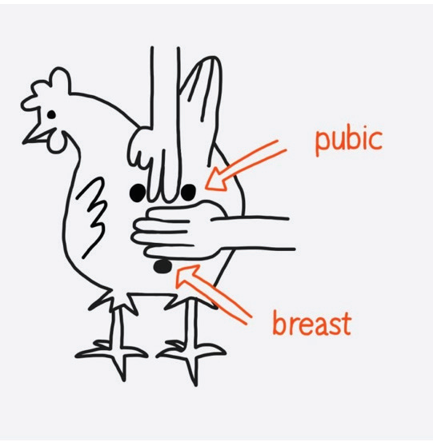
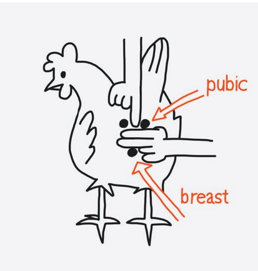

Table 11.6: Differences between good layers and poor layers
| Parameter | Good layers | Poor layers |
|---|---|---|
| Vigour | Strong | Weak and unthrifty |
| Comb and Wattles | Full, red, waxy, warm and velvety | Very long, thin and sharp pointed |
| Eyes | Full, bright and alert | Dull and sleepy |
| Ear lobes | Full waxy and velvety | Shrunken and coarse |
| Abdomen | Large, soft and free from fat | Small, hard with thick fat |
| Vent | Full, larger and moist | Smaller and dry |
| Temperament | Alert, active and friendly | Nervous and quacky |
| Moult | Late and rapid | Early and slow |
| Pubic bones and keel | 3 - 4 fingers spread between pubic bones and keel bone 2 - 3 fingers spread between two pubic bones (refer to Figure 11.4 (a) | 1 - 2 fingers spread between pubic bones and keel bone 1 finger spread between two pubic bones (refer to Figure 11.4 (b) |

pubic
breast

pubic
breast
Note: To avoid losing the egg market, a new flock to replace the old one should start laying when the final culling is done.